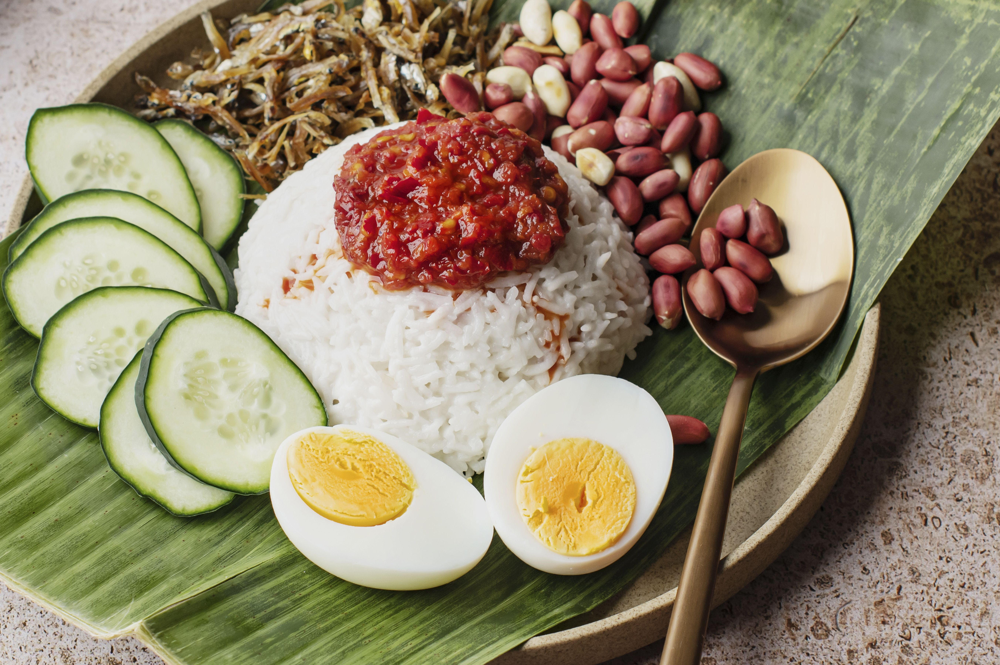

Nasi Lemak Recipe

Ingredients of Nasi Lemak
- fluffy rice cooked with coconut milk
- Pandan leaves
- Spicy sambal sauce made from dried chillies
- Anchovies or squid
- Spiced fried chicken
- Hard-boiled eggs
- Slices of cucumber
- Peanuts.
Steps to make
- Rinse 2 cups of rice under cold, running water for a few minutes and drain. Place the drained rice in a rice cooker.
- Prepare the coconut milk to cook the rice by pouring 50ml or 1/4 of the thick coconut milk (200ml / from 1 coconut) into a measuring cup. Then dilute with some water. Add 3 cups of canned coconut milk (750 ml) and 1 cup of water (250 ml) to the rice cooker. Add in additional water to make sure the volume of the watery coconut milk is the same as the rice in volume. (Altogether about 6 cups).
- Add 1 pandan leaf, knotted, 1 shallot, thinly sliced, 2-inch ginger, cut into matchsticks, 4 garlic cloves, thinly sliced, and 1 lemongrass, bruised, to the rice cooker. Stir to mix.
- Cook the rice in the rice cooker.
- While the rice is cooking, prepare the sambal sauce by blending 20 largish dried red chillies, 5 fresh red chillies, 7 small round shallots, 2 plump garlic cloves, 30g piece fresh ginger, 75ml neutral oil, such as vegetable or sunflower, 2 tsp belacan (fermented shrimp paste), and tamarind paste or tamarind water.
- Fry the peanuts in a dry pan until you can smell them toasting, then set aside. Heat the oil in the same pan, fry the anchovies until crisp and golden, then tip them on to a piece of kitchen paper to drain. Boil the eggs for seven to nine minutes, depending on how hard-boiled you like them, then cool under running water, peel and halve. Cut the cucumber into thick slices.
- Serve the nasi lemak by putting a mound of rice on each plate, add a spoonful of sambal to the side, then add the peanuts, anchovies, eggs, and cucumber alongside. Serve the rest of the sambal on the table for people to help themselves. Optionally, serve spiced fried chicken or other protein sources on the side. Traditionally, nasi lemak is served wrapped in a banana leaf.